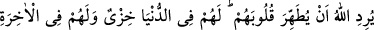

YAHÛDİLERİN ÖZELLİKLERİ
41- Ey Rasûl! Kalpleri îman etmediği halde ağızlarıyle “inandık” diyen
kimselerden ve yahûdîlerden küfür içinde koşuşanlar(ın hâli) seni üzmesin. Onlar
durmadan yalana kulak verirler ve sana gelmeyen (bazı) kimselere kulak verirler;
kelimeleri yerlerinden kaydırıp değiştirirler. «Eğer size bu verilirse hemen alın, bu
verilmezse sakının!» derler. Allah bir kimseyi şaşkınlığa (fitneye) düşürmek isterse,
sen Allah’a karşı onun lehine hiçbir şey yapamazsın. Onlar, Allah’ın kalplerini
temizlemek istemediği kimselerdir. Onlar için dünyâda rezillik ve âhirette de
büyük azap vardır.
42- Hep yalana kulak verir, durmadan haram yerler. Sana gelirlerse, ister
aralarında hüküm ver, ister onlardan yüz çevir. Eğer onlardan yüz çevirirsen sana
hiçbir zarar veremezler. Ve eğer hüküm verirsen, aralarında adaletle hükmet.
Allah, âdil olanları sever.
43- İçinde Allah’ın hükmü bulunan Tevrat yanlarında olduğu halde nasıl seni
hakem kılıyorlar da sonra, bunun arkasından yüz çevirip gidiyorlar? Onlar inanmış
kimseler değildir.
“Ey Rasûl!” Rasûlullah (s.a.)’e risalet unvânıyla hitap edilmesi onu şereflendirmek
içindir.